目次
DriveGPT: Scaling Autoregressive Behavior Models for Driving
Xin Huang1、Eric M. Wolff1、Paul Vernaza1、Tung Phan-Minh1、Hongge Chen1、David S. Hayden1、Mark Edmonds1、Brian Pierce1、Xinxin Chen1、Pratik Elias Jacob1、Xiaobai Chen1、Chingiz Tairbekov1、Pratik Agarwal1、Tianshi Gao1、Yuning Chai2、Siddhartha S. Srinivasa1
1Cruise LLC（米国カリフォルニア州サンフランシスコ）、2Meta（米国カリフォルニア州メンローパーク）
連絡先：Xin Huang、Eric M. Wolff <{cyrus.huang, eric.wolff}@getcruise.com>
Proceedings of the 42nd International Conference on Machine Learning（ICML 2025）、カナダ・バンクーバー、PMLR 267、2025年。Copyright 2025 by the author(s).
arXiv:2412.14415v3 [cs.LG]、2025年5月2日
翻訳について：原文 PDF は
28_DriveGPT_2412.14415.pdf（全 14 ページ）。本文、図の説明、図中ラベル、表、脚注、付録を訳出し、論文タイトルと参考文献は原文のまま掲載。図は原図を掲載し、英語ラベルの日本語訳を併記した。数式・数値・引用番号・コードの識別子は原文を維持。原文の記述に関する補足は「訳注」と明示し、本文と区別している。引用は著者年方式のため（著者, 年）の形で原文表記のまま残した。
要旨
本論文では、自動運転のためのスケーラブルな行動モデルである DriveGPT を提案する。我々は運転を逐次的な意思決定タスクとしてモデル化し、エージェントの将来状態をトークンとして自己回帰的に予測する Transformer モデルを学習する。モデルのパラメータ数と学習データを何桁にもわたってスケールアップすることで、データセット規模、モデルパラメータ数、計算量の観点からスケーリング特性を調べることが可能になる。計画（プランニング）タスクにおいて、異なる規模の DriveGPT を定量的指標と定性的な事例の両面から評価する。これには複雑な実世界シナリオでのクローズドループ走行も含まれる。別途行った予測タスクでは、DriveGPT は最先端のベースラインを上回り、大規模データセットでの事前学習によって性能が向上することを示し、データスケーリングの利点をさらに裏付ける。
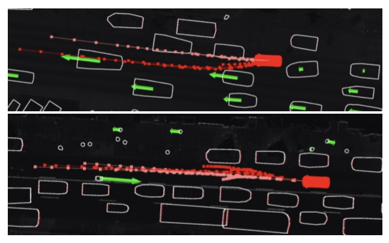
図1：データとモデルのスケーリングにより、DriveGPT（赤）は、より少ないデータで学習したより小さなベースライン（ピンク）と比べて、渋滞中の車線変更や対向車線の自転車への譲歩といった複雑な実世界の運転シナリオに対処できる。
| モデル | パラメータ数 | 学習セグメント数 |
|---|---|---|
| VectorNet | 72K | 211K |
| PlanTF | 2.1M | 1M |
| QCNet-Argo2 | 7.3M | 200K |
| QCNet-WOMD | 7.5M | 2.2M |
| Wayformer | 20M | 2.2M |
| MotionLM | 27M | 1.1M |
| MTR | 66M | 2.2M |
| GUMP | 523M | 2.6M |
| DriveGPT（本手法） | 1.4B | 120M |
表1：DriveGPT は既存の公開行動モデルより約 3 倍大きく、約 50 倍多くのデータシーケンスで学習されている。
1 はじめに
Transformer ベースの基盤モデルは、さまざまな機械学習分野の系列モデリングタスクでますます広く用いられるようになっている。これらのモデルは長距離の依存関係と時間的関係を捉えることで、系列データの扱いに非常に高い効果を発揮する。その成功は、系列パターンが重要な役割を果たす自然言語処理（Mann et al., 2020; Kaplan et al., 2020; Hoffmann et al., 2022）、時系列予測（Zhou et al., 2021）、音声認識（Kim et al., 2022）で明らかである。Transformer ベースのモデルの大きな強みの一つは、数百万件の学習事例を含む大規模データセットから学習できる能力であり、これにより最大で数十億パラメータにまで及ぶモデル規模の拡大によって複雑なタスクに対処できる。
テキスト予測の系列モデリングにおける近年の進歩にはモデルとデータセット規模のスケールアップが決定的であったが（Kaplan et al., 2020; Hoffmann et al., 2022）、いくつかの固有の課題のため、こうしたスケーリングの傾向が行動モデリング、特に運転タスクにそのまま拡張できるかどうかは依然として不明である。第一に、テキスト入力のみに依存する言語タスクと異なり、運転タスクにはエージェントの軌跡や地図情報など、より幅広い入力モダリティが関わる。第二に、行動モデリングには空間的推論と物理的な運動学の理解が求められる。こうした能力は通常、言語モデルの守備範囲を超えている。最後に、大規模な運転データセットの収集には多大な労力と資源が必要であり、テキストデータの収集よりはるかに困難である。その結果、表1にまとめたように、既存研究は学習データの入手可能性やモデルのスケーラビリティによって制約されることが多い。
本研究では、自動運転のための行動モデリングの文脈において、データ規模とモデルパラメータ数のスケールアップに関する包括的な研究を提示する。行動モデリングは、交通エージェントの将来の行動を予測し、計画や動き予測といった重要なタスクを支えるものである。具体的には、既存のオープンソースデータセットの約 50 倍にあたる 1 億件を超える高品質な人間の運転事例で Transformer ベースの自己回帰行動モデルを学習し、モデルを 10 億パラメータ超にスケールさせて、既存の公開行動モデルの規模を上回る。
学習データ量とモデルパラメータ数をスケールアップするにつれて、定量的指標と定性的な振る舞いの両方で改善が見られる。さらに重要なことに、図11に示すように、大規模で多様なデータセットで学習した大規模モデルは、自動運転車にとってしばしば大きな課題となるまれなシナリオやエッジケースのシナリオにより良く対処できる。その結果、データとモデルパラメータを通じて行動モデルをスケールアップすることで、自動運転システムの安全性と頑健性を向上させる大きな可能性があると我々は考える。
脚注1：ベースラインモデルは約 50 分の 1 のデータで学習され、約 50 分の 1 のパラメータ数である。
本論文の主な貢献は以下のとおりである。
- モデルパラメータと実世界の学習データサンプルの両方をスケールアップすることで、運転のための大規模な自己回帰行動モデル DriveGPT を提示する。
- 自己回帰行動モデルについて、データ規模、モデルパラメータ数、計算量の観点から経験的な運転スケーリング則を求める。学習データと計算量をスケールアップすることの価値を検証し、学習データが増えるにつれてモデルのスケーラビリティが向上することを観測する。これは言語のスケーリングに関する文献と整合する。
- スケーリング実験で得られたモデルを定量的・定性的に比較し、実世界の運転シナリオでの有効性を検証する。困難な条件下でのクローズドループ走行を通じて、本モデルの実世界への展開を示す。
- Waymo Open Motion Dataset において本モデルの汎化性を実証する。本モデルは動き予測タスクで従来の最先端手法を上回り、大規模事前学習によって性能が向上する。
2 関連研究
2.1 行動モデリング
行動モデリングは自動運転における重要なタスクであり、計画、予測、シミュレーションを含む幅広いタスクを包含する。行動モデルは、エージェントの過去状態や地図情報を含むマルチモーダルな入力を受け取り、エージェントのダイナミクス（Cui et al., 2020; Song et al., 2022）、相互作用（Sun et al., 2022; Jiang et al., 2023）、人間の意図（Shi et al., 2022; Huang et al., 2022; Sun et al., 2024）、運転環境（Liang et al., 2020; Kim et al., 2021）について推論することで、これら交通エージェントの将来状態を予測する。
学習ベースのモデルの中でも、Transformer は、エンコーダとしてマルチモーダル入力を融合する能力（Nayakanti et al., 2023; Zhang et al., 2023; Zhou et al., 2023; Jia et al., 2023; Gan et al., 2024）や、デコーダとして長距離の時間的関係をモデル化する能力（Seff et al., 2023; Shi et al., 2022; 2024）により人気を集めている。行動モデリングにおける Transformer の成功にもかかわらず、既存文献は学習データが限られているためにモデルパラメータの規模が制限されることが多く、Transformer ベースのモデルが持つスケーリングの潜在力を十分に引き出せていない。本研究では、1 億件を超える運転デモンストレーションを含む大規模データセットで学習することで Transformer モデルを数十億パラメータ規模にまでスケールアップし、自動運転の文脈で Transformer ベースのモデルのスケーラビリティを検証する。
2.2 大規模 Transformer モデル
大規模 Transformer は、モデルパラメータとデータ規模をスケールアップすることで、系列モデリングタスクにおいて大きな成功を収めてきた（Kaplan et al., 2020; Hoffmann et al., 2022; Zhai et al., 2022; Muennighoff et al., 2023）。これらのスケーリング則は、自然言語処理（Mann et al., 2020）、時系列予測（Zhou et al., 2021）、音声認識（Kim et al., 2022）を含む多くの系列モデリングタスクの限界を押し広げてきた。
近年の研究は、動き予測（Seff et al., 2023; Ettinger et al., 2024）、計画（Sun et al., 2023）、シミュレーション（Hu et al., 2024b）の文脈で行動モデルのスケーラビリティを調べているが、これらの研究は限られたデータ規模（最大で数百万件の学習事例）に制約されているか、データとモデルのスケーリングについて数桁の範囲に焦点を当てているにとどまり、広いスケーリング範囲にわたって統計的に有意な結論を導く可能性が制限されている。
本論文では、従来研究と比べてはるかに広い範囲にわたってスケーリング特性（データサンプル数、モデルパラメータ数、計算量の観点）を調べる。より具体的には、（LLM の文献にあるように）スケーラブルであり、かつ交通エージェントの正確な軌跡の生成に有効であること（Seff et al., 2023; Chen et al., 2024; Hu et al., 2024a）が実証されている自己回帰デコーダアーキテクチャを対象とする。
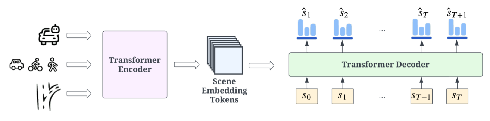
図2：Transformer エンコーダと Transformer デコーダからなる DriveGPT のアーキテクチャ。Transformer エンコーダは、対象エージェントの履歴、周辺エージェントの履歴、地図情報といった関連するシーンコンテキストを、一組のシーン埋め込みトークンに要約する。Transformer デコーダは LLM 型のアーキテクチャに従い、エージェント状態の系列を入力として受け取り、過去の状態を条件として次のティックにおける行動の離散分布を予測する。
図中ラベル：Transformer Encoder＝Transformer エンコーダ、Scene Embedding Tokens＝シーン埋め込みトークン、Transformer Decoder＝Transformer デコーダ
自動運転以外では、ロボットタスク向けの大規模 Transformer モデルの構築に関する文献は限られている（O'Neill et al., 2024; Octo Model Team et al., 2024）。これらは本研究と類似した Transformer アーキテクチャを共有している。ロボティクスのモデルは異なる入力特徴量や動的モデルを持ち、異なる環境で動作することが多いため、運転タスクに直接適用するのは難しい。
3 行動モデル
図2に示すように、我々は行動モデルとして標準的なエンコーダ・デコーダアーキテクチャを用いる。関連する系列モデリングタスクにおけるスケーラビリティから、エンコーダとデコーダのバックボーンには Transformer ベースのモデルを用いる。
3.1 問題の定式化
我々はこの問題を、対象エージェントのホライズン \(T\) までの将来位置に対する系列予測タスクとしてモデル化し、各ステップで連鎖律を適用して、運転コンテキスト情報 \(\mathbf{c}\) とエージェントの過去位置 \(\mathbf{s}\) を条件とする。
\[ P(s_{1:T}|\mathbf{c}) = \Pi_{t=1}^{T} P(s_t | s_{0:t-1}, \mathbf{c}). \tag{1} \]
コンテキスト情報には、対象エージェントの履歴状態 \(c_{\text{target}}\)、周辺エージェントの履歴状態 \(c_{\text{nearby}}\)、地図状態 \(c_{\text{map}}\) が含まれる。エージェントの履歴情報には過去のステップにおけるエージェント位置が含まれる。すなわち、ステップ \(t\) におけるエージェント位置を予測したい場合は \(s_{0:t-1}\) である。
我々は「状態（state）」を、位置、向き、速度、加速度を含む完全な運動学的状態として定義する。これはエージェントの履歴観測で一般に利用可能である。一方「位置（position）」は、出力空間を単純化するために 2 次元の (x, y) 座標とする。
3.2 シーンエンコーダ
エンコーダは、すべての入力モダリティを一組のシーン埋め込みトークンへ融合する標準的な Transformer エンコーダアーキテクチャ（Shi et al., 2022）に従う。エンコーダは、対象エージェントの履歴状態、周辺エージェントの履歴状態、地図状態を含む生の入力特徴量をベクトルの集合として受け取り、すべての入力をエージェント中心の視点に正規化する。各ベクトルは（Gao et al., 2020）と同様に PointNet 風のエンコーダによってトークン埋め込みに写像される。エンコーダの最後では、自己注意 Transformer（Vaswani et al., 2017）を適用して、すべての入力コンテキストを運転シーンを要約する一組のエンコーダ埋め込み \(\mathbf{c} \in \mathbb{R}^{n \times d}\) に融合する。ここで \(n\) はベクトル数、\(d\) はトークンの次元である。
3.3 LLM 型の軌跡デコーダ
LLM の文献（Radford et al., 2019）に着想を得て、我々は（Seff et al., 2023）に従い、Transformer デコーダアーキテクチャを用いて将来の各ステップにおけるエージェント位置の分布を予測する。
デコーダはまず、すべてのステップのエージェント位置を線形層によって次元 \(d\) の埋め込みにトークン化し、続いて LayerNorm 層と ReLU 層を通す。各ステップ \(t\) において、デコーダは \(t\) までのエージェント埋め込みを受け取り、それらとエンコーダ埋め込み \(\mathbf{c}\) との間でクロス注意をとって、次のステップ \(t+1\) におけるエージェント位置の分布を予測する。
出力は、位置の 2 階微分としての Verlet 行動（Rhinehart et al., 2018; Seff et al., 2023）で表現される離散行動 \(a\) の集合である。Verlet 行動を位置に写像するには次の式を適用できる。
\[ s_{t+1} = s_t + (s_t - s_{t-1}) + a_t, \tag{2} \]
ここで \(a_t\) は予測された Verlet 行動であり、\((s_t - s_{t-1})\) は等速度のステップを仮定したものである。この表現は、少数の行動集合で滑らかな軌跡を予測するのに役立つ。
3.4 学習
DriveGPT モデルの学習では、教師強制（teacher forcing）に従い、正解の将来位置を軌跡デコーダへの入力として与える。これにより、すべての将来ステップを並列に予測できる。
行動空間に対して単一の交差エントロピー分類損失を用い、目標行動には正解の将来軌跡に最も近いものを選ぶ。学習の詳細については付録 A を参照されたい。
3.5 推論
推論時には、標準的な LLM の設定に従い、次ステップの行動分布を予測し、行動をサンプリングし、それを入力系列に追加し戻すという処理を繰り返すことで、ホライズン \(T\) にわたる軌跡を自己回帰的に展開（ロールアウト）する。
分布を近似するために複数の軌跡をバッチでサンプリングし、その後（Seff et al., 2023）と同様に \(K\)-Means を用いて所望のモード数にサブサンプリングする。
| モデル規模 | 隠れ次元（\(d_{\text{model}}\)） | 最大学習率 |
|---|---|---|
| 1.5M | 64 | 0.0050 |
| 4M | 128 | 0.0020 |
| 8M | 192 | 0.0014 |
| 12M | 256 | 0.0010 |
| 26M | 384 | 0.0010 |
| 94M | 768 | 0.0007 |
| 163M | 1024 | 0.0004 |
| 358M | 1536 | 0.0002 |
| 629M | 2048 | 0.0001 |
| 1.4B | 3072 | 0.0001 |
表2：隠れ次元を変えることで、モデル規模を 3 桁にわたって変化させる。各モデル規模について最適な学習率を報告する。学習率はモデル規模が大きくなるにつれて小さくなり、LLM のスケーリングに関する文献（Kaplan et al., 2020; Hoffmann et al., 2022）の観察と一致する。
4 スケーリング実験
スケーリング実験の目的は、データとモデル規模が行動予測の性能に与える影響を明らかにすることである。LLM で見られるもの（Kaplan et al., 2020）と同様のスケーリング則を定量化することは、行動モデリングにおける今後の研究方針において、データと計算量の価値に優先順位を付けるのに役立つ。我々は、データとモデル規模の次なるフロンティア、すなわち既発表研究を 1 桁以上上回る領域の探索に注力する。
大規模運転データセット。数百万マイルに及ぶ高品質な実世界の人間の運転デモンストレーションから、社内研究用データセットとして 1 億 2000 万（120M）セグメントの小さなサブセットを厳選した。このデータセットは、米国、日本、アラブ首長国連邦（UAE）を含む複数の都市・国にわたる多様な地域を代表するよう、慎重に選別・バランス調整されている。データ収集は昼間と夜間に均等に配分され、主に市街地環境で実施された。このデータセットは、車線変更、交差点、二重駐車車両、工事区間、歩行者や自転車との近接した相互作用など、幅広い困難な運転シナリオを捉えている。
行動モデリングの文献で慣例となっているように（Gao et al., 2020）、地図情報、対象エージェントの状態、周辺エージェントの状態をベクトル化表現として抽出した。
スケーリングの概要。エンコーダとデコーダ両方の Transformer で埋め込み次元を大きくすることにより、モデル規模を 150 万から 14 億パラメータまで 3 桁にわたってスケールさせる。各モデル規模について、全学習ステップにわたるコサイン減衰を用いた複数の学習率スケジュールを試し、最良の性能をもたらす最大学習率を選ぶ。表2に各モデル規模の最適な学習率をまとめる。大規模言語モデルのスケーリングにおける慣行（Kaplan et al., 2020）と同様に、各モデルは 1 エポックだけ学習する。
モデル性能は、学習データと同じ分布から重複なく抽出した 1000 万サンプルの包括的な検証セットで計算した検証損失によって評価する。一貫性を保つため、このセットはすべてのスケーリング実験を通じて固定する。スケーリング研究の標準的な慣行（Kaplan et al., 2020; Hoffmann et al., 2022; Muennighoff et al., 2023）に従い、検証損失をモデル性能を測る代理指標として用いる。次の行動の予測に対する交差エントロピーとして計算されるこの損失が、我々の主要な性能指標である。運転に特化した追加の指標は 5.1 節で報告する。
4.1 データスケーリング
データスケーリングの結果を図3にまとめる。最小の 220 万（2.2M）サンプルのデータセットは、行動モデリングのための大規模オープンソースデータセットである Waymo Open Motion Dataset（WOMD）（Ettinger et al., 2021）の規模を模している（約 44k シナリオで、シナリオごとに複数の対象エージェントを含む）。社内研究用データセットのいくつかのサブセットを選び、異なる桁のデータセット規模にわたってデータスケーリングを調べる。我々の実験は WOMD の約 50 倍のデータを用いており、設計空間の新たな領域を探索している。
結果は、モデル規模にかかわらず、より多くの固有データサンプルでモデルを学習するにつれて性能が向上することを示している。図3のスケーリング則から外挿すると、最良の損失をさらに 10% 改善するには 3 億 5000 万（350M）件の学習事例を追加する必要がある。20% の改善には約 14 億（1.4B）件の追加事例が必要となる。結果として、運転性能をさらに向上させるうえでデータが依然としてボトルネックであることがわかる。
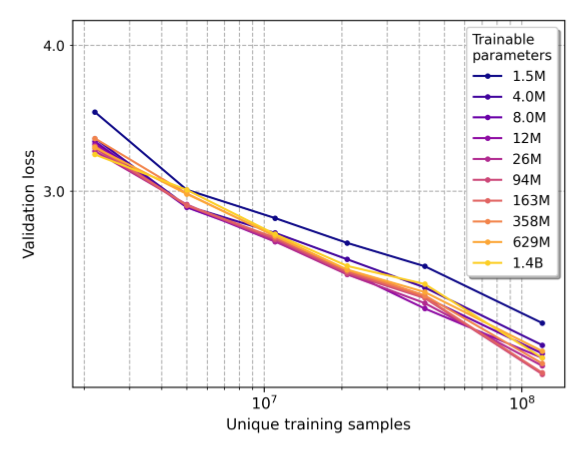
図3：さまざまなモデルパラメータ数にわたって、データセット規模とともに性能が向上しており、データが制約要因であることを示している。両軸とも対数スケールである。1.5M の曲線を除くすべてのデータ点に指数関数的なフィットを適用した結果、\(\log(L) = -0.102 \log(D) + 2.663\)（\(R^2\) 値 0.986）という関係が得られた。ここで \(L\) は検証損失、\(D\) は固有の学習サンプル数である。
図中ラベル：Validation loss＝検証損失、Unique training samples＝固有の学習サンプル数、Trainable parameters＝学習可能パラメータ数
最後に、スケーリングの結果はモデル規模を通じて比較的一貫している。この一貫性は、データスケーリングの比較を、1000 万パラメータを超える程度の比較的小さなモデル規模で行えることを示している。
4.2 モデルスケーリング
次に、表2に挙げたように、3 桁（1.5M から 1.4B パラメータ）にわたるモデル規模を調べる。簡単のため、Transformer の隠れ次元を大きくすることでモデル規模を増やす。付録 B で調べたように、注意ヘッド数やヘッドあたりの隠れ次元といった他のパラメータを変更しても、結果に目立った変化は生じないことがわかった。
他のスケーリング研究（Kaplan et al., 2020; Hoffmann et al., 2022）で観察されているように、より大きなモデルの学習は学習率に敏感である。各モデル規模について異なる学習率で複数の実験を行い、表2にまとめたように最適な性能を示すものを選ぶ。
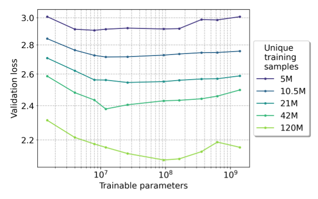
図4：モデルスケーリングは学習データが増えるほど効果的になる。データセット全体で学習した場合、検証損失は約 1 億（100M）パラメータまで改善する。
図中ラベル：Validation loss＝検証損失、Trainable parameters＝学習可能パラメータ数、Unique training samples＝固有の学習サンプル数
図4の結果は、学習データ量を増やすことでモデルスケーリングの効果が高まることを示している。具体的には、データセット規模が 21M までの場合、広範囲のモデル規模にわたって検証損失への影響はほとんど認められない。21M サンプルを超えると、より大きなモデルほど検証損失が改善し、42M のデータセットで学習した場合は 12M パラメータまで、120M のデータセットで学習した場合は 94M パラメータまで改善した後、頭打ちとなり、最終的には過学習に至る。これらの知見は、データがモデルのスケーリングにおける主要なボトルネックであることをさらに裏付けるものであり、LLM のスケーリングに関する文献（Kaplan et al., 2020）の観察と一致する。より大規模なデータセットでのスケーリング挙動のさらなる探究は今後の課題とする。
4.3 計算量のスケーリング
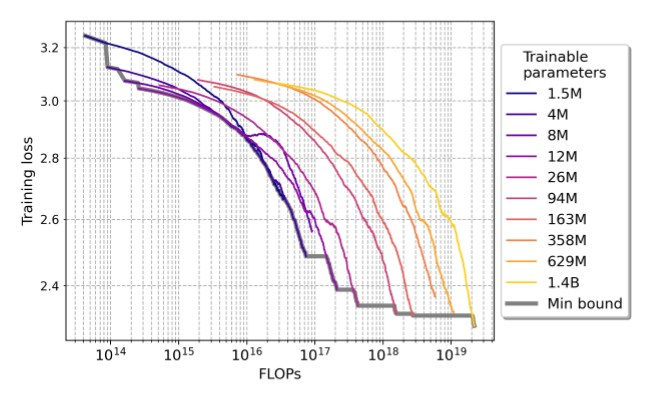
図5：（平滑化した）学習損失と FLOPs の関係。各曲線は特定のモデル規模に対応する実験を表し、「min bound（最小境界）」は与えられた FLOP 予算で可能な最良の性能を示す。
図中ラベル：Training loss＝学習損失、Trainable parameters＝学習可能パラメータ数、Min bound＝最小境界
図5では、計算量が学習損失にどのように影響するかを調べる。ここで計算量は浮動小数点演算数（FLOPs）で測る。我々は単調減少する「最小境界（min-bound）」を特定した。これは現在の計算量の値までに観測された最小の学習損失を示すものである。計算量を増やすにつれて、学習損失は概ね減少する。当初この減少はかなり急であるが、FLOPs の値が大きくなるにつれて徐々に緩やかになる。この傾向は、（Hoffmann et al., 2022）が報告したものなど LLM のスケーリングに関する文献の観察と一致しているが、これらの研究で探索された FLOP の全範囲のうちの一部を対象としたものである。
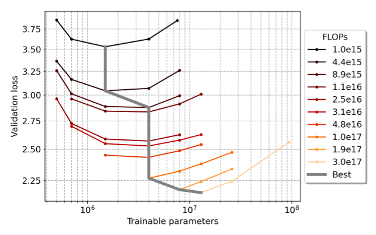
図6：固定した計算予算ごとの、モデル規模の関数としての性能。灰色の実線は各計算予算における最良の結果を結んだものである。
図中ラベル：Validation loss＝検証損失、Trainable parameters＝学習可能パラメータ数、Best＝最良
次に、固定の計算予算のもとで、データ規模とモデルパラメータ数の最適な組み合わせが存在するかどうかを調べる。我々が探索している規模でモデルを学習するための計算コストは大きいため、データを最大限に活用することが重要である。本検討では、計算予算を異なる FLOP グループに固定した。計算予算が固定されている場合、資源をモデルパラメータとデータサンプルのどちらにも割り当てることができ、その積は一定に保たれる。
図6は異なる計算予算での性能をプロットしたものである。この傾向は、「best（最良）」の灰色の線が示すように、計算予算が大きいほど性能が向上し、それに応じて最適なモデル規模も大きくなることを明確に示している。さらに結果からは、上位 3 つの最大 FLOP グループにおいて最小のモデルが他のモデルを上回っていることから、データが主要なボトルネックであることも明らかになる。
4.4 デコーダアーキテクチャに関するアブレーション研究
我々は 2 つの異なるモデルアーキテクチャ、すなわち本手法の自己回帰デコーダとワンショットデコーダを 2 桁にわたってスケールアップする。ワンショットデコーダについては、（Nayakanti et al., 2023）に従い、学習済みクエリの集合を受け取ってシーン埋め込みとの間でクロス注意をとり、軌跡サンプルを生成する Transformer デコーダを用いる。このデコーダは、自己回帰デコーダが LLM 型に従って 1 ステップずつ軌跡を生成するのに対し、軌跡全体のロールアウトを一度に生成するため「ワンショット」と呼ばれる。
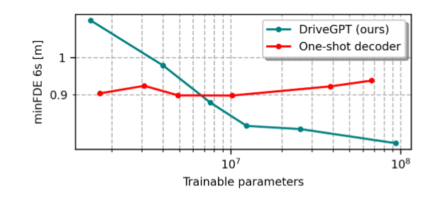
図7：DriveGPT は、ワンショットアーキテクチャと比べて自己回帰アーキテクチャを採用することで、minFDE の観点でより良いスケーラビリティを達成する。
図中ラベル：minFDE 6s [m]＝6 秒時点の minFDE [m]、Trainable parameters＝学習可能パラメータ数、DriveGPT (ours)＝DriveGPT（本手法）、One-shot decoder＝ワンショットデコーダ
結果を図7にまとめる。2 つのデコーダアーキテクチャでは損失の定義が異なるため、ここではモデル性能を測る代理指標として 6 秒時点の minFDE を用いる。小規模なパラメータ数では性能が劣るものの、本手法の自己回帰デコーダはより良いスケーラビリティを達成し、8M パラメータを超えるとワンショットのベースラインを上回る。ワンショットデコーダのスケーリングはより難しいことがわかった一方で、本手法の自己回帰デコーダは予測精度の観点で 1 億（100M）パラメータまでスケールすることを確認した。ワンショットデコーダのスケーラビリティに関するさらなる研究は今後の課題とする。
5 計画および予測実験
本節では、社内研究用データセットを用いた計画タスクと、外部データセットを用いた動き予測タスクにおける DriveGPT の詳細な結果を示す。ここでの結果は、4 節のスケーリングの影響をさらに探るとともに、それらの結果を運転タスクと運転の指標に結び付けるのに役立つ。
5.1 社内評価：自動運転車（AV）の計画
計画タスクでは、数百万件の高品質な人間の運転デモンストレーションから構成される社内研究用データセットを用いてモデルを学習し、3.5 節で述べたように次の行動を自己回帰的に予測することで AV の軌跡を生成する。
（Seff et al., 2023）と同様に、バッチで軌跡をオーバーサンプリングし、6 本の軌跡にサブサンプリングすることで分布を近似する。最終的に AV は計画のために単一の軌跡を選ばなければならないが、複数のサンプルを返すことはマルチモーダルな振る舞いをより良く理解するのに役立ち、動き予測の指標とも整合する。
包括的なテストセットにおいて、minADE（mADE）、minFDE（mFDE）、ミス率（MR）を含む一連の標準的な幾何的指標によって計画性能を測定する。さらに、道路から逸脱する軌跡の割合を測るオフロード率（Offroad）や、交通エージェントと重なる軌跡の割合を測る衝突率（Collision）を含む、意味に基づく指標も用いる。相対的な性能変化を強調するため、これらの指標は実験間で正規化する。
5.1.1 データスケーリングの結果
26M パラメータの DriveGPT モデルを、規模の異なるデータセットで学習して比較する。ベースラインのデータセット（2.2M）は、WOMD のような典型的な行動モデリングデータセットの規模を模すよう選んだものである。
| データ | \(\widehat{\text{mADE}}\downarrow\) | \(\widehat{\text{mFDE}}\downarrow\) | \(\widehat{\text{MR}}\downarrow\) | \(\widehat{\text{Offroad}}\downarrow\) | \(\widehat{\text{Collision}}\downarrow\) |
|---|---|---|---|---|---|
| 2.2M | 1.000 | 1.000 | 1.000 | 1.000 | 1.000 |
| 21M | 0.561 | 0.496 | 0.420 | 0.326 | 0.269 |
| 85M | 0.496 | 0.441 | 0.332 | 0.238 | 0.217 |
| 120M | 0.489 | 0.433 | 0.317 | 0.198 | 0.196 |
表3：学習データをスケールアップするにつれて、DriveGPT はすべての指標で測ってより良い AV 軌跡を生成する。相対的な性能を強調するため、指標は正規化している。
| モデル | \(\widehat{\text{mADE}}\downarrow\) | \(\widehat{\text{mFDE}}\downarrow\) | \(\widehat{\text{MR}}\downarrow\) | \(\widehat{\text{Offroad}}\downarrow\) | \(\widehat{\text{Collision}}\downarrow\) |
|---|---|---|---|---|---|
| 8M | 1.000 | 1.000 | 1.000 | 1.000 | 1.000 |
| 26M | 0.954 | 0.950 | 0.902 | 0.858 | 0.915 |
| 94M | 0.937 | 0.925 | 0.866 | 0.815 | 0.890 |
| 163M | 0.943 | 0.925 | 0.875 | 0.815 | 0.817 |
表4：モデルパラメータ数をスケールアップするにつれて、94M まではすべての指標が改善する。衝突率は 163M でも改善を続ける。相対的な性能を強調するため、指標は正規化している。
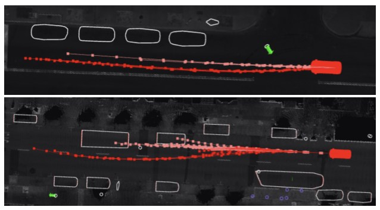
図8：50 倍多くのデータで学習することで、DriveGPT（赤）は、信号無視の横断歩行者から安全な横方向距離を保つ（上）、二重駐車された 2 台の車両を回避する（下）といった、高品質な軌跡を赤で生成できる。
結果を表3に示す。より多くのデータサンプルで学習することで、幾何的指標だけでなく、オフロード率や衝突率といった運転において重要な意味的指標の観点でも、予測される AV 軌跡の品質が大幅に向上することがわかる。これらの改善は 4.1 節と整合している。
さらに、より多くのデータで学習することの価値を示すために、図8に 2 つの定性的な例を示す。これらの例では、赤の軌跡は 120M サンプルで学習した DriveGPT を、ピンクの軌跡は同じモデルを 2.2M サンプルで学習したものを表す。これらの例は、より多くのデータで学習した場合、本手法が地図に準拠した衝突のない軌跡を生成し、信号無視の横断歩行者や二重駐車された 2 台の車両が関わる複雑な相互作用にうまく対処できることを示している。
5.1.2 モデルスケーリングの結果
120M の社内研究用データセットを用いて 4 つのモデルを学習し、8M のモデルをベースラインとして選ぶ。4.4 節で示したように、このベースラインは本モデルがワンショットデコーダを上回り始める妥当な規模にあたる。
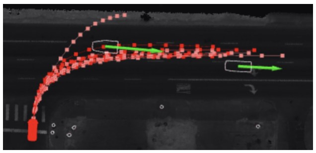
図9：12 倍多いパラメータで学習することで、DriveGPT（赤）は、交通の流れへ右折で合流する際に車線境界を守る現実的な軌跡を生成する。
結果を表4に示す。モデル規模が 94M パラメータまで大きくなるにつれてすべての指標が改善し、163M パラメータでは衝突の指標がさらに改善する（定性的な例は D.1 節を参照）。図4では 94M を超えると検証損失の改善が逓減しているが、運転指標はモデル容量の増大とともに改善を続けており、運転性能の向上のためにより多くのパラメータを導入することの潜在的な利点を浮き彫りにしている。
図9に定性的な例を示す。右折シナリオにおいて、94M パラメータの大きな DriveGPT は、8M パラメータの小さなバージョンと比べて、道路境界内にとどまるより良い軌跡サンプルを赤で生成している。
5.1.3 クローズドループ走行
クローズドループ設定に展開したリアルタイムの動作計画器としての DriveGPT の有効性を実証する。モデルは、エージェント状態と地図情報を出力する産業レベルの知覚システムから入力特徴量を受け取る。データセット全体で学習した 8M の DriveGPT モデルを用いて車両を運転し、単一の車載 GPU で 50ms 未満のレイテンシを達成した。
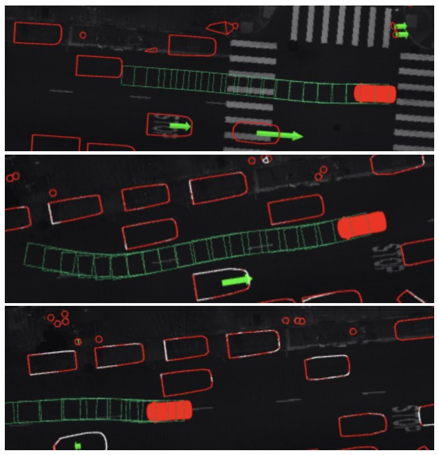
図10：高密度な都市交通の中で、クローズドループ計画器としてリアルタイムに動作する DriveGPT の例。まず前進する軌跡を生成し（上）、二重駐車された車両を回避するようにそれを更新し（中）、最後に元の車線へ戻る（下）。
図10では、二重駐車された 2 台の車両が前方の進路を塞ぎ、ほかにも対向車両がいる高密度な都市交通の困難な例を示す。DriveGPT は滑らかで安全な軌跡を生成し、進路を塞ぐ車両を回避したのち元の車線へ戻る。さらなる例は補足動画 https://youtu.be/-hLi44PfY8g で示しており、そこでは DriveGPT のみがリアルタイムの運転を担っている。
5.2 外部評価：動き予測
公表されている結果と直接比較するため、WOMD の動き予測タスクで DriveGPT を評価する。さらに、社内研究用データセットで事前学習し、はるかに小規模な WOMD データセットでファインチューニングすることで、スケールの利点を探る。
5.2.1 オープンソースのエンコーダ
外部評価では、オープンソースの MTR（Shi et al., 2022）エンコーダを用いる。このエンコーダは 3.2 節で述べたものと類似している。この変更は、結果の再現性を高め、WOMD 向けの MTR のオープンソースのデータ読み込みコードを活用するために行う。デコーダには 3.3 節で述べたものと同じ自己回帰デコーダを用いる。
5.2.2 事前学習の設定
WOMD データセットと互換性を持たせるため、DriveGPT にいくつかの小さな変更を加えた。第一に、地図データを WOMD と同じ意味情報を含むように変更する。第二に、エージェントデータを WOMD と同じ交通エージェントの運動学的特徴量を含むように変更する。
DriveGPT を社内研究用データセットで 1 エポック学習して事前学習する（4 節と同様）。事前学習済みのチェックポイントを読み込み、MTR のコードベースと同じ学習設定を用いてモデルをファインチューニングする。そこでは、重み付き減衰の学習率スケジューラを用いてモデルを 30 エポック学習する。
5.2.3 結果
minADE、minFDE、ミス率、soft mAP を含む WOMD の一連の標準的な指標によってモデル性能を測定する。各指標はテストセットで測定し、3 つの異なる時間ホライズンについて計算する。
動き予測タスクでの有効性を検証するため、本手法の 2 つの変種を示す。WOMD で学習した DriveGPT-WOMD と、120M の社内研究用データセットで事前学習して WOMD でファインチューニングした DriveGPT-Finetune である。ベースラインには、代表的な最先端モデル群を用いる。
WOMD テストセット2での結果を表5に報告する。結果は、幾何的指標の観点で本手法が既存の最先端の非アンサンブルモデルを上回ることを示している。最大 8 個のレプリカのアンサンブルを用いる Wayformer（Nayakanti et al., 2023）や MotionLM（Seff et al., 2023）と比べても、本モデルはアンサンブルを一切用いずに最良の minADE と minFDE、2 番目に良いミス率を達成している。
脚注2：指標の値は（Zhang et al., 2023）および WOMD リーダーボードから引用した。
我々は予測軌跡サンプルの再現率（すなわち重要な軌跡を見逃さないこと）を重視する幾何的指標を優先しているが、本モデルは最適でない確率推定のために soft mAP のスコアが低くなっている。これらの推定値は、（式(1)で述べたように）長い系列にわたって行動確率を掛け合わせることで計算されるため、時間とともに蓄積するノイズの影響を受け、その結果サンプル確率の精度が下がり、予測サンプル間での正確な確率の割り当てに依存する soft mAP が低下する。その結果、予測ホライズンが長くなるにつれて soft mAP の差が拡大することに気づく。これは、LLM の文献でも指摘されているように（Jiang et al., 2021; Geng et al., 2024）、正確な確率推定に自己回帰デコーダを用いることの限界を示している。行動モデリングにおける自己回帰モデルの確率推定の改善は今後の課題とする。有望な方向性の一つは、サンプルごとに追加の確率予測ヘッドを学習することであり、これにより確率推定が向上し、soft mAP スコアの改善につながる可能性がある。
| minADE↓ | minFDE↓ | Miss Rate↓ | Soft mAP↑ | |
|---|---|---|---|---|
| MTR（Shi et al., 2022） | 0.6050 | 1.2207 | 0.1351 | 0.4216 |
| HDGT（Jia et al., 2023） | 0.7676 | 1.1077 | 0.1325 | 0.3709 |
| HPTR（Zhang et al., 2023） | 0.5565 | 1.1393 | 0.1434 | 0.3968 |
| ControlMTR（Sun et al., 2024） | 0.5897 | 1.1916 | 0.1282 | 0.4572 |
| MTR++（Shi et al., 2024） | 0.5906 | 1.1939 | 0.1298 | 0.4414 |
| Wayformer†（Nayakanti et al., 2023） | 0.5454 | 1.1280 | 0.1228 | 0.4335 |
| MotionLM†（Seff et al., 2023） | 0.5509 | 1.1199 | 0.1058 | 0.4507 |
| DriveGPT-WOMD | 0.5279 | 1.0609 | 0.1236 | 0.3795 |
| DriveGPT-Finetune | 0.5240 | 1.0538 | 0.1202 | 0.3857 |
表5：WOMD テストセットにおいて、DriveGPT はアンサンブルを一切用いずに幾何的指標でより良い結果を達成し、事前学習後には性能がさらに向上する。結果は 3 種類のエージェント（車両、歩行者、自転車）と 3 つの予測ホライズン（3s、5s、8s）で平均している。最良の指標を太字、2 番目を下線で示す。† はアンサンブルを表す。
社内データセットと公開の WOMD データセットとの間には、軌跡の分布、特徴量のノイズ、意味定義の違いといった点で大きな分布シフトがあるにもかかわらず、社内データセットで事前学習することで最大 3% の追加的な改善が見られる。
| 車両 | minADE↓ | minFDE↓ | Miss Rate↓ |
|---|---|---|---|
| MTR | 0.7642 | 1.5257 | 0.1514 |
| DriveGPT-WOMD | 0.6396 | 1.2823 | 0.1213 |
| DriveGPT-Finetune | 0.6326 | 1.2636 | 0.1181 |
| 自転車 | minADE↓ | minFDE↓ | Miss Rate↓ |
| MTR | 0.7022 | 1.4093 | 0.1786 |
| DriveGPT-WOMD | 0.6317 | 1.2617 | 0.1756 |
| DriveGPT-Finetune | 0.6294 | 1.2641 | 0.1691 |
| 歩行者 | minADE↓ | minFDE↓ | Miss Rate↓ |
| MTR | 0.3486 | 0.7270 | 0.0753 |
| DriveGPT-WOMD | 0.3122 | 0.6388 | 0.0738 |
| DriveGPT-Finetune | 0.3100 | 0.6338 | 0.0733 |
表6：DriveGPT は多様な種類のエージェントにわたってより良い幾何的指標を達成する。結果は 3 つの予測ホライズンで平均している。
表6のエージェント種別ごとの結果を詳しく見ると、本手法と同じエンコーダを共有する MTR と比べて、すべてのエージェント種別で一貫した改善が見られる。これは、5.1 節で述べた車両の行動モデリングの結果に加えて、本手法の汎化性をさらに裏付けるものである。
5.2.4 定性的な比較
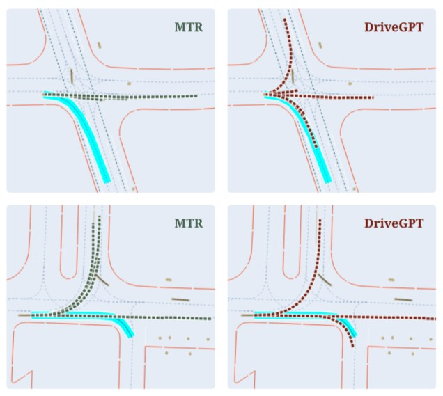
図11：MTR（左）と比べて、DriveGPT（右）は複雑な交差点においてより正確で多様な軌跡を生成する。青は正解の将来軌跡を表す。
図11に 2 つの定性的な比較を示す。ここで DriveGPT は、MTR と比べて多様性（より多くの異なる結果をカバーすること）と精度（正解の将来と一致すること）の点でより良い軌跡を生成している。この改善は、エージェントの履歴情報が限られている（上段）や将来のモダリティが複数ある（下段）といった困難なシナリオで顕著である。
6 結論
自動運転におけるモデルパラメータ数とデータセット規模の効果をより良く理解するため、LLM 型の自己回帰行動モデルである DriveGPT を導入した。データセット規模とモデル容量の両方の関数としてモデル性能を体系的に調べ、データと計算量に関して LLM と同様のスケーリング則があること、およびモデル規模の増大に伴う収穫逓減を明らかにした。実世界の運転シナリオにおける計画について、スケーリングの定量的・定性的な利点を示した。さらに、公開の動き予測ベンチマークで本手法を実証し、DriveGPT が最先端のベースラインを上回り、大規模データセットでの事前学習によって性能が向上することを示した。
謝辞
本論文への貢献に対し、Abbas Shikari、Akshay Rangesh、Allan Lazarovici、Andy Zhuang、Ann Yan、Anton Spiridonov、Burkay Donderici、David Fang、Dennis Park、Florent Bekerman、Greg Meyer、Hans Zhang、Haytham Mohamed、Joe Liu、Jonathan Sorg、Junyuan Shi、Ling Li、Mao Ye、Matthew Creme、Peng Tang、Poonam Suryanarayan、Rizwan Chaudhry、Rosalie Zhu、Siva Karthik Mustikovela、Srinidhi Myadaboyina、Tanmay Agarwal、Xinlei Pan、Yi Hao、Yunlong He、Zaiwei Zhang、Zisu Dong（アルファベット順）、ならびに Cruise のデータチームおよびインフラチームの多くの方々に感謝する。
影響に関する声明
本論文は、自動運転車のための行動モデリングの研究を前進させることを目的としている。AV は一般の人々と相互作用するため、本研究には他の道路利用者の周囲における AV の振る舞いを向上させ、最終的により安全な道路に貢献する可能性がある。
参考文献
参考文献は原文のまま掲載した。
- Chen, Y., Wang, Y., and Zhang, Z. DrivingGPT: Unifying driving world modeling and planning with multi-modal autoregressive transformers. arXiv preprint arXiv:2412.18607, 2024.
- Cui, H., Nguyen, T., Chou, F.-C., Lin, T.-H., Schneider, J., Bradley, D., and Djuric, N. Deep kinematic models for kinematically feasible vehicle trajectory predictions. In 2020 IEEE International Conference on Robotics and Automation (ICRA), pp. 10563–10569. IEEE, 2020.
- Ettinger, S., Cheng, S., Caine, B., Liu, C., Zhao, H., Pradhan, S., Chai, Y., Sapp, B., Qi, C. R., Zhou, Y., et al. Large scale interactive motion forecasting for autonomous driving: The Waymo open motion dataset. In Proceedings of the IEEE/CVF International Conference on Computer Vision, pp. 9710–9719, 2021.
- Ettinger, S., Goel, K., Srivastava, A., and Al-Rfou, R. Scaling motion forecasting models with ensemble distillation. In 2024 IEEE International Conference on Robotics and Automation (ICRA), pp. 4812–4818. IEEE, 2024.
- Gan, Y., Xiao, H., Zhao, Y., Zhang, E., Huang, Z., Ye, X., and Ge, L. Multi-granular transformer for motion prediction with lidar. In 2024 IEEE International Conference on Robotics and Automation (ICRA), pp. 15092–15098. IEEE, 2024.
- Gao, J., Sun, C., Zhao, H., Shen, Y., Anguelov, D., Li, C., and Schmid, C. VectorNet: Encoding hd maps and agent dynamics from vectorized representation. In Proceedings of the IEEE/CVF conference on computer vision and pattern recognition, pp. 11525–11533, 2020.
- Geng, J., Cai, F., Wang, Y., Koeppl, H., Nakov, P., and Gurevych, I. A survey of confidence estimation and calibration in large language models. In Proceedings of the 2024 Conference of the North American Chapter of the Association for Computational Linguistics: Human Language Technologies, pp. 6577–6595, 2024.
- Hoffmann, J., Borgeaud, S., Mensch, A., Buchatskaya, E., Cai, T., Rutherford, E., Casas, D. d. L., Hendricks, L. A., Welbl, J., Clark, A., et al. Training compute-optimal large language models. arXiv preprint arXiv:2203.15556, 2022.
- Hu, X., Yin, W., Jia, M., Deng, J., Guo, X., Zhang, Q., Long, X., and Tan, P. DrivingWorld: Constructing world model for autonomous driving via video GPT. arXiv preprint arXiv:2412.19505, 2024a.
- Hu, Y., Chai, S., Yang, Z., Qian, J., Li, K., Shao, W., Zhang, H., Xu, W., and Liu, Q. Solving motion planning tasks with a scalable generative model. In European Conference on Computer Vision, pp. 386–404. Springer, 2024b.
- Huang, X., Rosman, G., Gilitschenski, I., Jasour, A., McGill, S. G., Leonard, J. J., and Williams, B. C. HYPER: Learned hybrid trajectory prediction via factored inference and adaptive sampling. In 2022 International Conference on Robotics and Automation (ICRA), pp. 2906–2912. IEEE, 2022.
- Jia, X., Wu, P., Chen, L., Liu, Y., Li, H., and Yan, J. HDGT: Heterogeneous driving graph transformer for multi-agent trajectory prediction via scene encoding. IEEE transactions on pattern analysis and machine intelligence, 2023.
- Jiang, C., Cornman, A., Park, C., Sapp, B., Zhou, Y., Anguelov, D., et al. MotionDiffuser: Controllable multi-agent motion prediction using diffusion. In Proceedings of the IEEE/CVF Conference on Computer Vision and Pattern Recognition, pp. 9644–9653, 2023.
- Jiang, Z., Araki, J., Ding, H., and Neubig, G. How can we know when language models know? On the calibration of language models for question answering. Transactions of the Association for Computational Linguistics, 9:962–977, 2021.
- Kaplan, J., McCandlish, S., Henighan, T., Brown, T. B., Chess, B., Child, R., Gray, S., Radford, A., Wu, J., and Amodei, D. Scaling laws for neural language models. arXiv preprint arXiv:2001.08361, 2020.
- Kim, B., Park, S. H., Lee, S., Khoshimjonov, E., Kum, D., Kim, J., Kim, J. S., and Choi, J. W. LaPred: Lane-aware prediction of multi-modal future trajectories of dynamic agents. In Proceedings of the IEEE/CVF Conference on Computer Vision and Pattern Recognition, pp. 14636–14645, 2021.
- Kim, S., Gholami, A., Shaw, A., Lee, N., Mangalam, K., Malik, J., Mahoney, M. W., and Keutzer, K. Squeezeformer: An efficient transformer for automatic speech recognition. Advances in Neural Information Processing Systems, 35:9361–9373, 2022.
- Liang, M., Yang, B., Hu, R., Chen, Y., Liao, R., Feng, S., and Urtasun, R. Learning lane graph representations for motion forecasting. In Computer Vision–ECCV 2020: 16th European Conference, Glasgow, UK, August 23–28, 2020, Proceedings, Part II 16, pp. 541–556. Springer, 2020.
- Mann, B., Ryder, N., Subbiah, M., Kaplan, J., Dhariwal, P., Neelakantan, A., Shyam, P., Sastry, G., Askell, A., Agarwal, S., et al. Language models are few-shot learners. arXiv preprint arXiv:2005.14165, 1, 2020.
- Muennighoff, N., Rush, A., Barak, B., Le Scao, T., Tazi, N., Piktus, A., Pyysalo, S., Wolf, T., and Raffel, C. A. Scaling data-constrained language models. Advances in Neural Information Processing Systems, 36:50358–50376, 2023.
- Nayakanti, N., Al-Rfou, R., Zhou, A., Goel, K., Refaat, K. S., and Sapp, B. Wayformer: Motion forecasting via simple & efficient attention networks. In 2023 IEEE International Conference on Robotics and Automation (ICRA), pp. 2980–2987. IEEE, 2023.
- Octo Model Team, Ghosh, D., Walke, H., Pertsch, K., Black, K., Mees, O., Dasari, S., Hejna, J., Xu, C., Luo, J., Kreiman, T., Tan, Y., Chen, L. Y., Sanketi, P., Vuong, Q., Xiao, T., Sadigh, D., Finn, C., and Levine, S. Octo: An open-source generalist robot policy. In Proceedings of Robotics: Science and Systems, Delft, Netherlands, 2024.
- O'Neill, A., Rehman, A., Maddukuri, A., Gupta, A., Padalkar, A., Lee, A., Pooley, A., Gupta, A., Mandlekar, A., Jain, A., et al. Open x-embodiment: Robotic learning datasets and rt-x models: Open x-embodiment collaboration 0. In 2024 IEEE International Conference on Robotics and Automation (ICRA), pp. 6892–6903. IEEE, 2024.
- Radford, A., Wu, J., Child, R., Luan, D., Amodei, D., Sutskever, I., et al. Language models are unsupervised multitask learners. OpenAI blog, 1(8):9, 2019.
- Rhinehart, N., Kitani, K. M., and Vernaza, P. R2p2: A reparameterized pushforward policy for diverse, precise generative path forecasting. In ECCV, pp. 772–788, 2018.
- Seff, A., Cera, B., Chen, D., Ng, M., Zhou, A., Nayakanti, N., Refaat, K. S., Al-Rfou, R., and Sapp, B. MotionLM: Multi-agent motion forecasting as language modeling. In Proceedings of the IEEE/CVF International Conference on Computer Vision, pp. 8579–8590, 2023.
- Shi, S., Jiang, L., Dai, D., and Schiele, B. Motion transformer with global intention localization and local movement refinement. Advances in Neural Information Processing Systems, 35:6531–6543, 2022.
- Shi, S., Jiang, L., Dai, D., and Schiele, B. MTR++: Multi-agent motion prediction with symmetric scene modeling and guided intention querying. IEEE Transactions on Pattern Analysis and Machine Intelligence, 46(5):3955–3971, 2024.
- Song, H., Luan, D., Ding, W., Wang, M. Y., and Chen, Q. Learning to predict vehicle trajectories with model-based planning. In Conference on Robot Learning, pp. 1035–1045. PMLR, 2022.
- Sun, J., Yuan, C., Sun, S., Wang, S., Han, Y., Ma, S., Huang, Z., Wong, A., Tee, K. P., and Ang, M. H. ControlMTR: Control-guided motion transformer with scene-compliant intention points for feasible motion prediction. In 2024 IEEE 27th International Conference on Intelligent Transportation Systems (ITSC), pp. 1507–1514. IEEE, 2024.
- Sun, Q., Huang, X., Gu, J., Williams, B. C., and Zhao, H. M2I: From factored marginal trajectory prediction to interactive prediction. In Proceedings of the IEEE/CVF Conference on Computer Vision and Pattern Recognition, pp. 6543–6552, 2022.
- Sun, Q., Zhang, S., Ma, D., Shi, J., Li, D., Luo, S., Wang, Y., Xu, N., Cao, G., and Zhao, H. Large trajectory models are scalable motion predictors and planners. arXiv preprint arXiv:2310.19620, 2023.
- Vaswani, A., Shazeer, N., Parmar, N., Uszkoreit, J., Jones, L., Gomez, A. N., Kaiser, Ł., and Polosukhin, I. Attention is all you need. Advances in neural information processing systems, 30(2017), 2017.
- Zhai, X., Kolesnikov, A., Houlsby, N., and Beyer, L. Scaling vision transformers. In Proceedings of the IEEE/CVF conference on computer vision and pattern recognition, pp. 12104–12113, 2022.
- Zhang, Z., Liniger, A., Sakaridis, C., Yu, F., and Van Gool, L. Real-time motion prediction via heterogeneous polyline transformer with relative pose encoding. In Advances in Neural Information Processing Systems (NeurIPS), 2023.
- Zhou, H., Zhang, S., Peng, J., Zhang, S., Li, J., Xiong, H., and Zhang, W. Informer: Beyond efficient transformer for long sequence time-series forecasting. In Proceedings of the AAAI conference on artificial intelligence, volume 35, pp. 11106–11115, 2021.
- Zhou, Z., Wang, J., Li, Y.-H., and Huang, Y.-K. Query-centric trajectory prediction. In Proceedings of the IEEE/CVF Conference on Computer Vision and Pattern Recognition, pp. 17863–17873, 2023.
A 学習の詳細
A.1 社内評価：AV の計画
LLM のスケーリングに関する文献（Kaplan et al., 2020; Hoffmann et al., 2022）での慣例どおり、社内研究用データセットでモデルを 1 エポック学習する。
本モデルは（Nayakanti et al., 2023; Seff et al., 2023）に記載された実装に従い、バッチサイズ 2048 と、（Kaplan et al., 2020）で採用された標準的な Adam オプティマイザを用いて学習する。（Hoffmann et al., 2022）で見いだされた最適な学習率スケジュールに従い、総学習ステップ数に等しいサイクル長のコサイン減衰を適用する。すべてのモデルは 16 基の NVIDIA H100 GPU で学習した。
A.2 外部評価：動き予測
（Shi et al., 2022）と同じ設定に従い、WOMD データでモデルを学習する。より具体的には、バッチサイズ 80 と学習率 0.0001 の AdamW オプティマイザを用いる。モデルは 30 エポック学習し、学習率はエポック 20 から 2 エポックごとに 0.5 倍に減衰させる。
B 追加のアブレーション研究
B.1 注意ヘッドに関するアブレーション研究
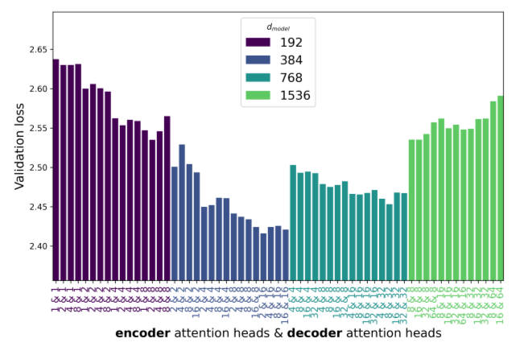
図12：注意ヘッド数の調整が検証損失の傾向に与える影響は、隠れ次元を変える場合と比べて小さい。
図中ラベル：Validation loss＝検証損失、encoder attention heads & decoder attention heads＝エンコーダの注意ヘッド数 & デコーダの注意ヘッド数（横軸の「a & b」はエンコーダ a ヘッド・デコーダ b ヘッドの組を表す）、\(d_{model}\)＝隠れ次元
図12では、表4（訳注：隠れ次元を示しているのは表2であり、「表4」は表2の誤りと思われる）で指定したとおり隠れ次元を同じに保ったまま、エンコーダとデコーダの Transformer におけるヘッド数の影響を調べるアブレーション研究を示す。各隠れ次元（\(d_{\text{model}}\)）について、注意ヘッドの複数の構成3にわたって実験を行い、それらの検証損失を異なる色で示す。小規模なモデルではデコーダの注意ヘッドが多いほど性能が良くなるというパターンが見られるものの、隠れ次元を固定した場合、スケーリングの傾向は注意ヘッド数よりも隠れ次元の大きさにより強く影響される。
脚注3：最後のグループでは、メモリの制約によりいくつかのモデルを省略している。
B.2 デコーダのスケーリングに関するアブレーション研究
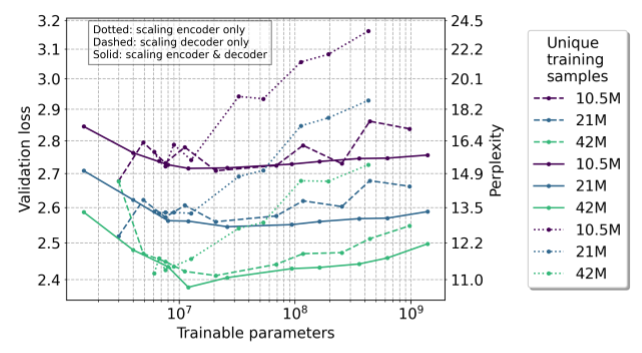
図13：デコーダのみをスケーリングすると、エンコーダとデコーダの両方をスケーリングする場合と同様の傾向を示すが、結果はより悪い。エンコーダのみのスケーリングは 10M パラメータを超えるとほとんど影響がない。
図中ラベル：Validation loss＝検証損失、Perplexity＝パープレキシティ、Trainable parameters＝学習可能パラメータ数、Unique training samples＝固有の学習サンプル数、Dotted: scaling encoder only＝点線：エンコーダのみスケーリング、Dashed: scaling decoder only＝破線：デコーダのみスケーリング、Solid: scaling encoder & decoder＝実線：エンコーダとデコーダをスケーリング
図13では、エンコーダを固定サイズに保ったまま自己回帰デコーダのみをスケールアップした場合のモデルスケーリングの結果（破線）を示す。エンコーダとデコーダの両方をスケーリングした場合（実線）と比べて、デコーダのみのスケーリングは同様の傾向を示すものの、特に大きい方の 2 つのデータセットで 10M パラメータを超えるモデルについて性能が悪くなる。したがって、主要な結果ではエンコーダとデコーダの両方のスケーリングに焦点を当てる。
B.3 エンコーダのスケーリングに関するアブレーション研究
図13では、デコーダを固定サイズに保ったままエンコーダのみをスケールアップした場合のモデルスケーリングの結果（点線）を示す。結果は、エンコーダのスケーリングがデコーダのスケーリングほど効果的ではないことを示している。
C パープレキシティの観点からのスケーリング
LLM のスケーリングに関する文献に倣い、我々はスケーリングの結果を検証損失の関数として示している。もう一つ強調すべき重要な側面は、パープレキシティのスケールである。エントロピーの指数として定義されるパープレキシティは、確率モデルがサンプルをどれだけうまく予測するかを定量化する。これはモデルが考慮している実効的な選択肢の数を反映しており、パープレキシティが \(k\) であることは、モデルが \(k\) 通りの選択肢の間で迷っていることを意味する。
図14では、パープレキシティを表す第 2 の \(y\) 軸を加えてスケーリングの結果をプロットし直す。図15では、最良のモデルのパープレキシティを固有の学習事例数の関数としてプロットする。図中のパープレキシティのフィットから外挿すると、パープレキシティ 7 を達成するには約 7000 万（70M）件、パープレキシティ 5 を達成するには 5 億（500M）件の学習事例の追加が必要となる。
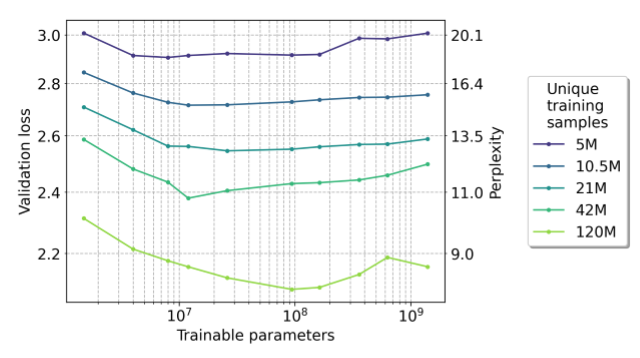
図14：参照しやすいよう、右側の \(y\) 軸にパープレキシティのスケールを付けて図4をプロットし直したもの。
図中ラベル：Validation loss＝検証損失、Perplexity＝パープレキシティ、Trainable parameters＝学習可能パラメータ数、Unique training samples＝固有の学習サンプル数
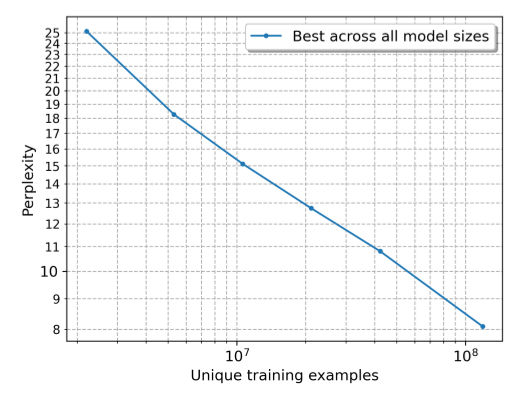
図15：図3のすべてのモデルにおける最良のパープレキシティ値を、データセット規模の関数としてフィットする。単純な線形回帰により \(\log(P) = -0.28 \log(D) + 7.22\)（\(R^2\) 値 0.994）が得られる。ここで \(P\) は検証パープレキシティ、\(D\) は固有の学習事例数である。
図中ラベル：Perplexity＝パープレキシティ、Unique training examples＝固有の学習事例数、Best across all model sizes＝全モデル規模中の最良値
D 追加の定性的な例
D.1 大規模モデルの定性的な比較
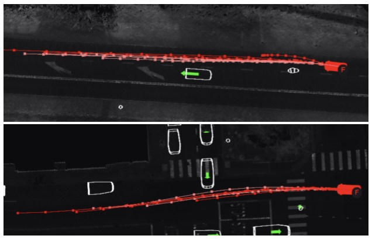
図16：163M パラメータの大きな DriveGPT モデルは、94M パラメータの小さなモデル（ピンク）と比べて、他の交通エージェントや路上の落下物からより安全な距離を保つ軌跡（赤）を生成する。
図16では、大きな DriveGPT モデル（163M パラメータ）が、より小さな 94M パラメータの変種と比べて優れた衝突回避能力を示すことを実証する 2 つの定性的な例を示す。
D.2 追加のクローズドループ走行の例
補足動画 https://youtu.be/-hLi44PfY8g では、クローズドループ設定におけるリアルタイムの動作計画器として DriveGPT を展開した追加の例を示す。動画は、a) 保護されていない左折、b) 二重駐車車両、c) 工事区間、d) 突っ切ってくる（blow-through）自転車、e) 渋滞中の車線変更を含む、運転における代表的な困難シナリオを網羅している。
D.3 WOMD における失敗例
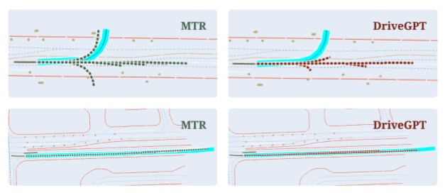
図17：MTR と比べて DriveGPT の誤差の悪化が最も大きい例では、車線境界の存在（上段）や地図情報の欠落（下段）のために、予測される軌跡の精度が低くなる。青は正解の将来を表す。
図17に DriveGPT の代表的な 2 つの失敗例を示す。これらは、WOMD において MTR ベースラインと比べて本手法の minFDE の悪化が最も大きいものに基づいて選んだ。1 つ目の例（上段）では、本手法はおそらく車線境界の存在のために、左折する軌跡を予測できていない。2 つ目の例（下段）では、データ中の地図情報が欠落しているために、DriveGPT は手前で止まりすぎる（アンダーシュートする）軌跡を予測し、縦方向の誤差が大きくなっている。
| 車両 | データ | mADE↓ | mFDE↓ | MR↓ |
|---|---|---|---|---|
| DriveGPT-WOMD | N/A | 0.6381 | 1.2846 | 0.1233 |
| DriveGPT-Finetune | 40M | 0.6368 | 1.2788 | 0.1217 |
| DriveGPT-Finetune | 80M | 0.6341 | 1.2736 | 0.1207 |
| DriveGPT-Finetune | 120M | 0.6310 | 1.2655 | 0.1195 |
表7：事前学習でより多くの学習サンプルを用いると、ファインチューニング後のモデルでより良い結果（3 つのホライズンで平均）が得られる。これは 4.1 節で示したデータスケーリングの利点を裏付ける。
| モデルパラメータ数 | mADE↓ | mFDE↓ | MR↓ |
|---|---|---|---|
| 2M | 0.6953 | 1.4297 | 0.1489 |
| 4M | 0.6534 | 1.3202 | 0.1298 |
| 9M | 0.6423 | 1.2955 | 0.1249 |
| 14M | 0.6381 | 1.2846 | 0.1233 |
| 21M | 0.6396 | 1.2871 | 0.1225 |
表8：DriveGPT-WOMD においてモデルパラメータ数をスケーリングすると、車両の予測指標は 14M パラメータまで改善する。結果は 3 つの予測ホライズンで平均している。
E WOMD の追加の検証結果
本節では、WOMD テストサーバーの提出回数制限のため、WOMD 検証セットでの追加のアブレーション研究を示す。
E.1 事前学習における WOMD データスケーリング
社内データセットのさまざまな規模で DriveGPT を事前学習することにより、データスケーリングの有効性を検証する。表7の結果は、より多くの固有サンプルで事前学習するとファインチューニング後のモデルでより良い結果が得られることを示しており、データスケーリングがモデル性能を向上させるという 4.1 節の知見と一致する。
E.2 WOMD モデルスケーリング
表8に、DriveGPT-WOMD を用いたモデルスケーリングに関するアブレーション研究を示す。結果は、モデル性能が 14M パラメータまで向上し続け、それを超えると WOMD のサンプル数が限られているためにそれ以上の改善が得られないことを示している。そのため、5.2 節では 14M モデルの結果を報告することにした。